타락한 발키리
1. 아스가르드 · 일반
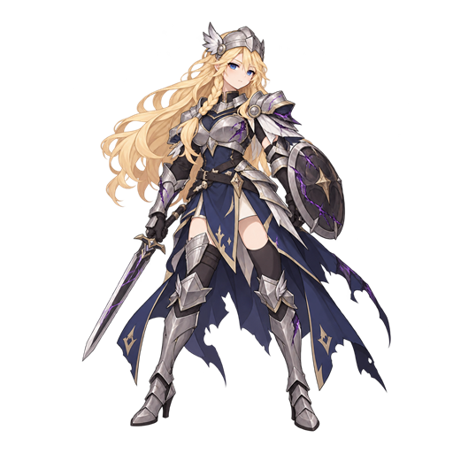
일반 타워의 확정 그림체 기준 · 개별 512×512 · 9개 스테이지 × 3종
그림을 누르면 생성 원본 확대. 현재 게임용 적 이미지는 유지하고 있으며 새 시안은 검토용으로 저장했어.
1. 아스가르드 · 일반

1. 아스가르드 · 중간 보스
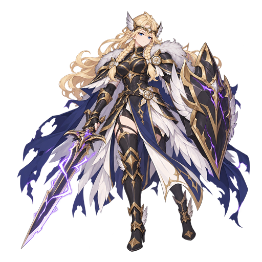
1. 아스가르드 · 최종 보스
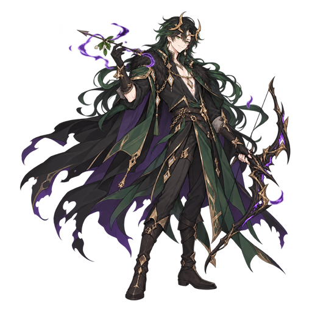
2. 알프헤임 · 일반
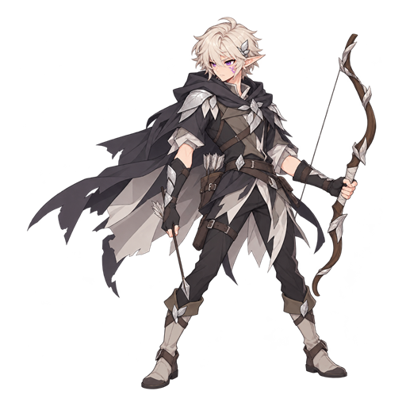
2. 알프헤임 · 중간 보스
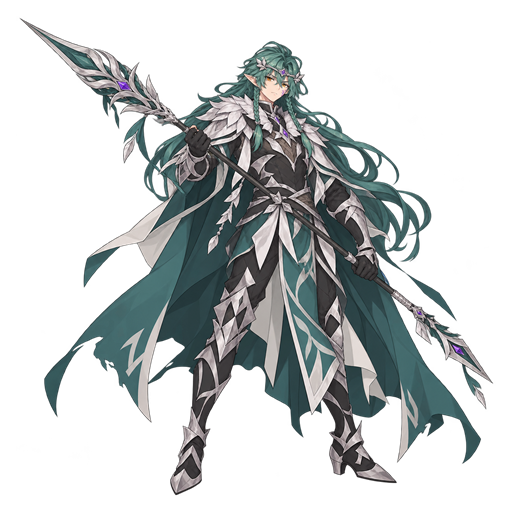
2. 알프헤임 · 최종 보스
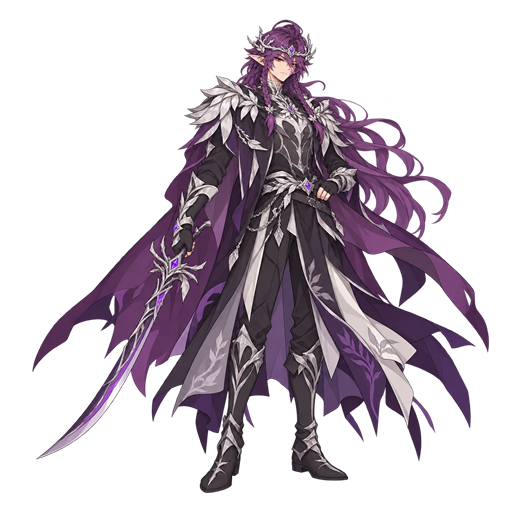
3. 바나헤임 · 일반
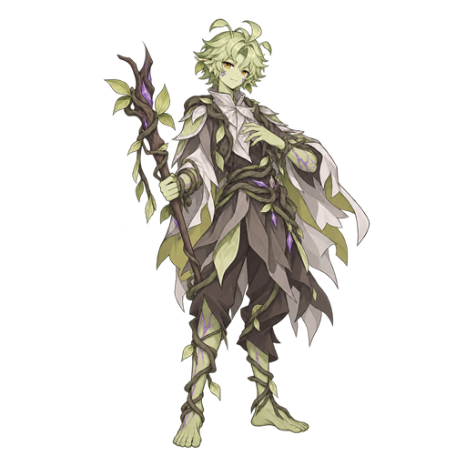
3. 바나헤임 · 중간 보스
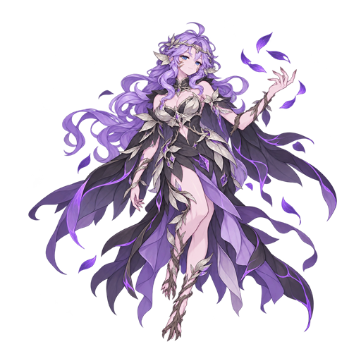
3. 바나헤임 · 최종 보스
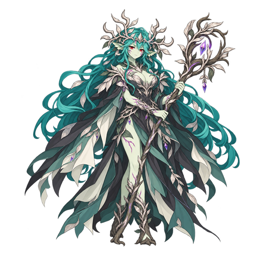
4. 미드가르드 · 일반
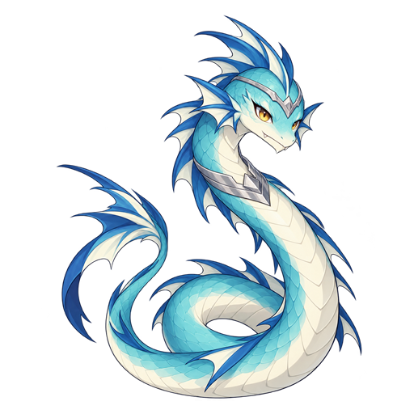
4. 미드가르드 · 중간 보스
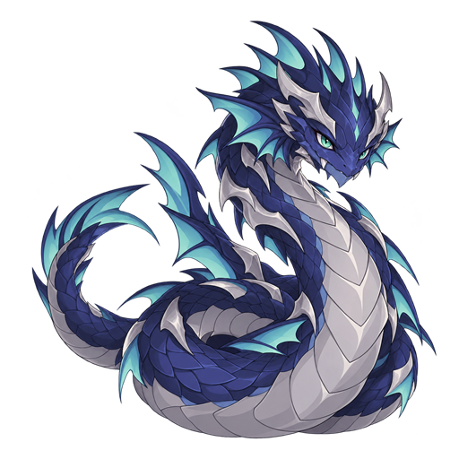
4. 미드가르드 · 최종 보스
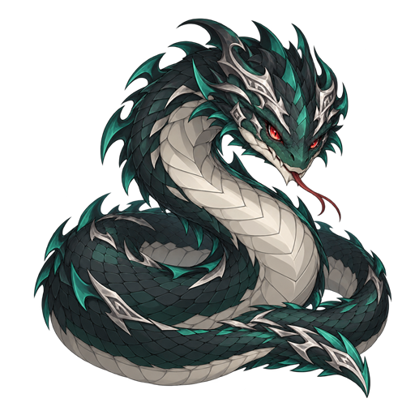
5. 요툰헤임 · 일반
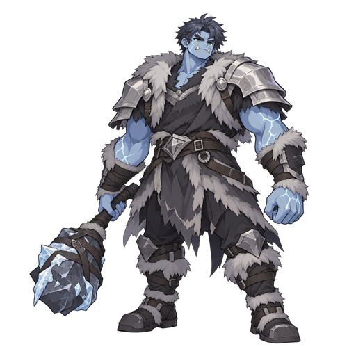
5. 요툰헤임 · 중간 보스
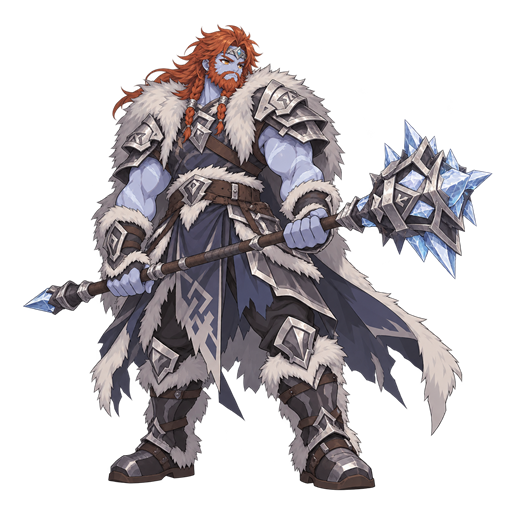
5. 요툰헤임 · 최종 보스
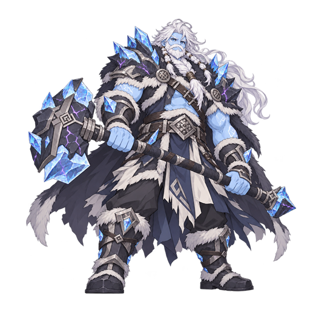
6. 니다벨리르 · 일반
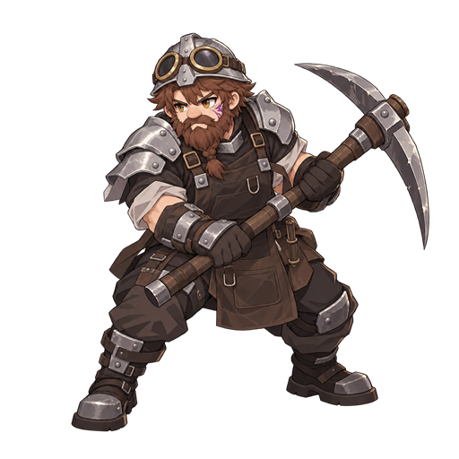
6. 니다벨리르 · 중간 보스
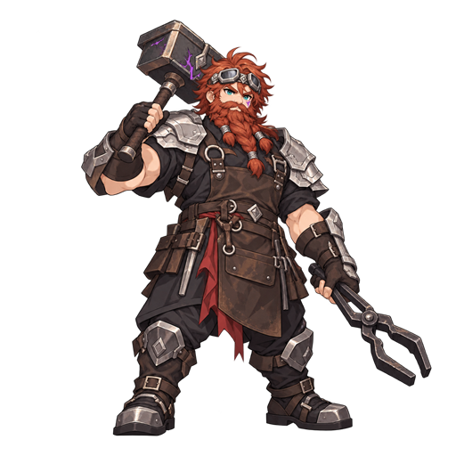
6. 니다벨리르 · 최종 보스
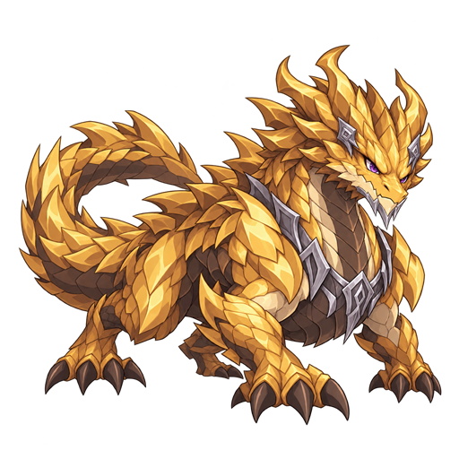
7. 니플헤임 · 일반
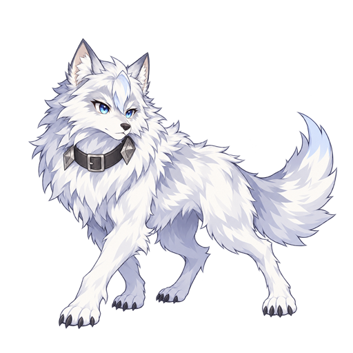
7. 니플헤임 · 중간 보스
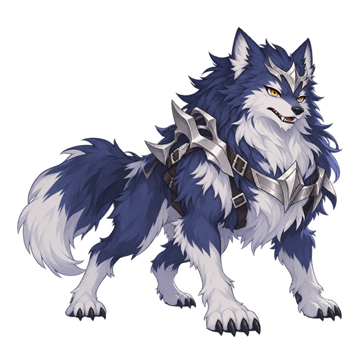
7. 니플헤임 · 최종 보스
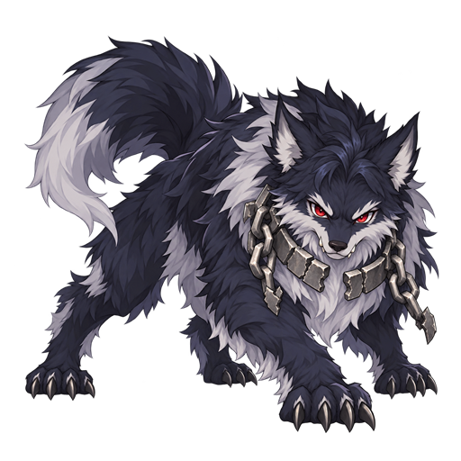
8. 무스펠헤임 · 일반
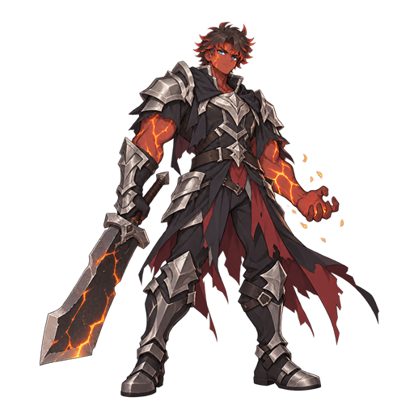
8. 무스펠헤임 · 중간 보스
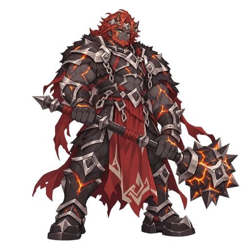
8. 무스펠헤임 · 최종 보스
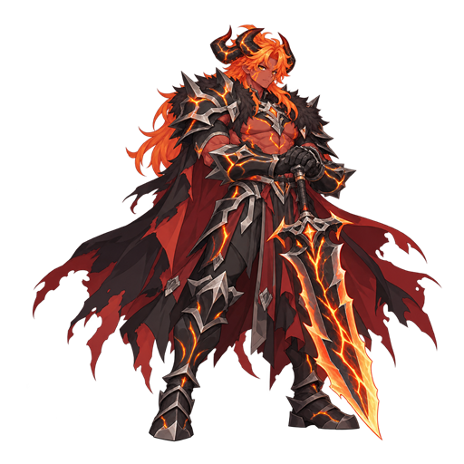
9. 헬 · 일반
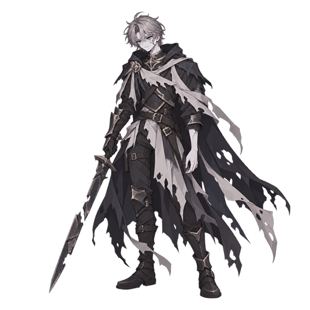
9. 헬 · 중간 보스
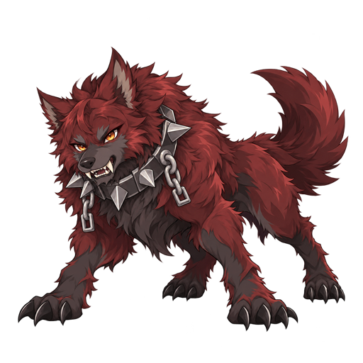
9. 헬 · 최종 보스
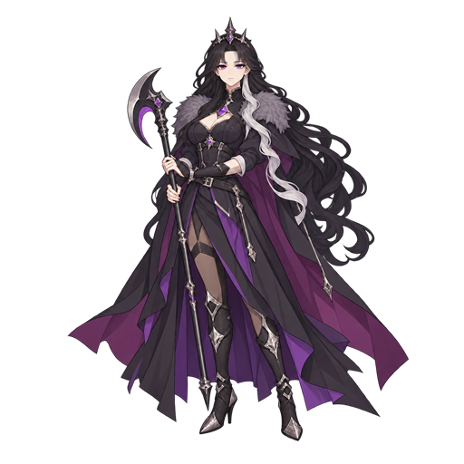